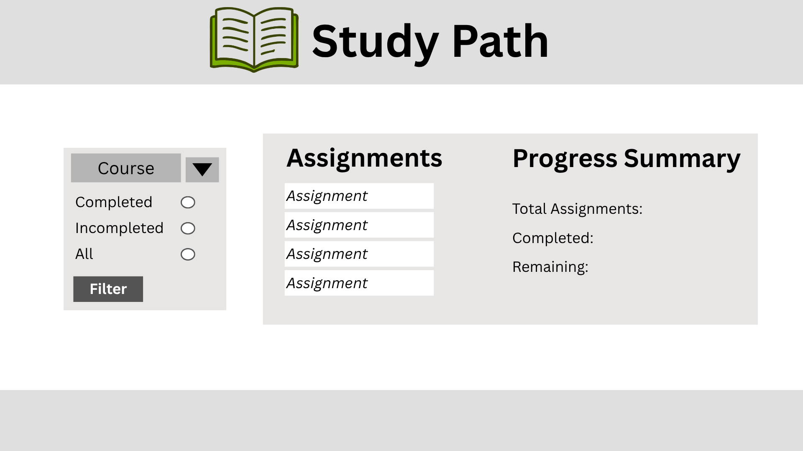

Site Name
Study Path was chosen because it represents a clear path for students to stay organized and succeed in their coursework. The name is simple, professional, and easy to remember.
Purpose
Study Path is a web application designed to help students organize assignments, track due dates, and manage their school workload more effectively. The site provides a simple way to view tasks, filter them by course or completion status, and stay on top of deadlines.
Audience
The intended audience is high school and college students who need help managing assignments and deadlines. It is especially useful for students taking multiple classes who want a clear and simple way to stay organized.
Dynamic Elements
JavaScript will power the main interactive features on the tracker page. The assignments will be stored in an array of objects, and JavaScript will use that data to create and display the assignment cards on the page. When the user chooses a course from the dropdown or selects Completed, Incomplete, or All, JavaScript will filter the assignments and update the list shown on the screen.
JavaScript will also update the Progress Summary section by counting the total number of assignments, how many are completed, and how many remain. Event listeners will respond when the user clicks the filter button, and conditional logic will be used to decide which assignments should appear. If no assignments match the selected filter, JavaScript will display a message letting the user know that no assignments were found.
Logo
Color Schema
Primary: #6B8E23
Secondary: #A3B18A
Accent: #DDA15E
Typography
Heading Font: Poppins
Body Font: Open Sans
These fonts were chosen because they are clean, modern, and easy to read on both desktop and mobile devices.
Content
Home Page
Image
Main Heading (About Section)
Text: Organize your schoolwork with confidence
Text: Study Path is designed to help students stay organized and keep track of their assignments in a simple and clear way. Managing multiple classes can quickly become overwhelming, especially when deadlines start to pile up. This site provides a focused space where users can see their assignments, understand what still needs to be completed, and stay on top of their responsibilities.
With a clean layout and easy-to-use features, StudyPath allows students to quickly view their workload and stay motivated. Instead of feeling stressed or unsure about what to do next, users can confidently manage their tasks and make steady progress throughout the week.
Tracker Page
Sample Assignment Data
The tracker page will use sample assignment data stored in an array of objects. This allows assignments to be displayed dynamically and filtered using JavaScript.
const assignments = [
{
title: "Math Homework 5",
course: "Math 108",
completed: false
},
{
title: "History Discussion Post",
course: "History 201",
completed: true
},
{
title: "Science Lab Report",
course: "Biology 110",
completed: false
},
{
title: "English Reading Notes",
course: "English 150",
completed: false
}
];
Wireframe
Home Page

Tracker Page
